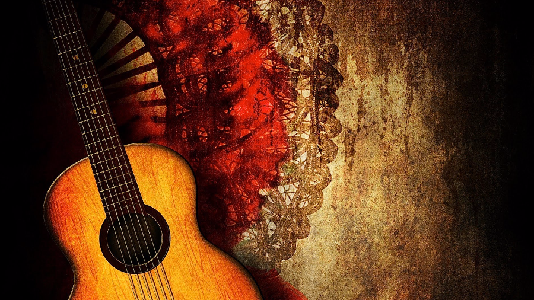

Flamenco 💃
Flamenco is the most iconic and popular musical style in Spain. When you think of Spain one of the first things that comes to mind is Flamenco. Although it's now well known as a Spanish dance and musical style, it is deeply rooted in Arabic culture and traditions. The Flamenco style of music traces back to Arabia, and was noticeably distinct from Western melodies at the time. There are numerous strucutral elements in Flamenco that are similar to the traditional music in North Africa. Flamenco first appeared during the slow but steady decline of Islamic Spain, in the Al-Andalus region, located in the southern part of Spain. In this region, Arabs, Jews, Christians and Gitanos (Gypsies) mixed and coexisted freely and peacefully, resulting in an echange of culture and traditions, and thus Flamenco was created.
Spanish Guitar 🎸
The Spanish Guitar, like Flamenco, is a significant part of Spanish culture that is also heavily influenced by Arabs from North Africa. Although previously there existed many instruments similar to the modern guitar, the Spanish guitar we know today was created and introduced in Al-Andalus, or Andalucia by Arabs during the Moor invasion of Spain. The Spanish Guitar can be traced back to the Arab oud, a four stringed instrument brough to Spain by Muslims from North Africa. The word Guitar or Guitarra in Spanish actually comes from the Arabic word Qitara used to describe the four string instrument brought over by the Moors. The melodies created by this instrument later influenced the Flamenco music style.